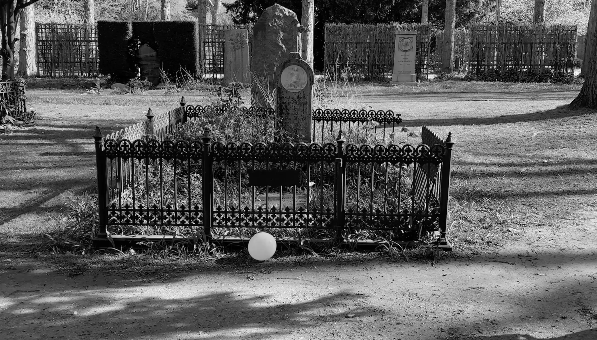
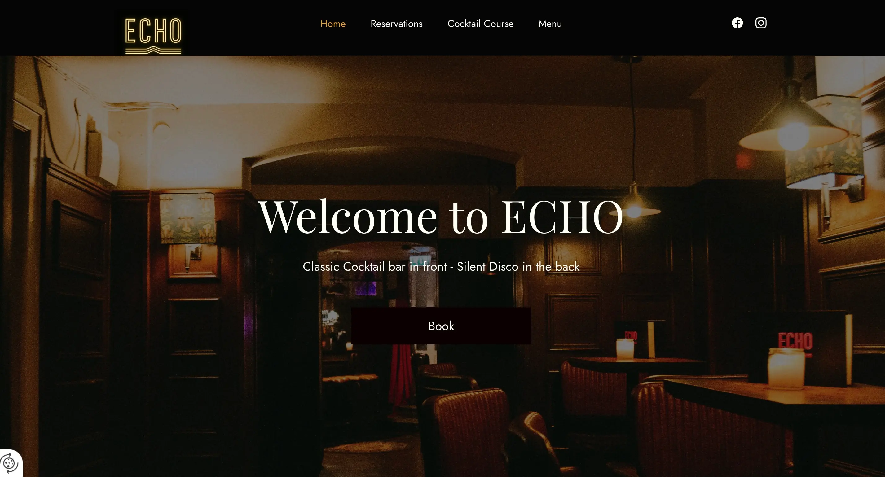
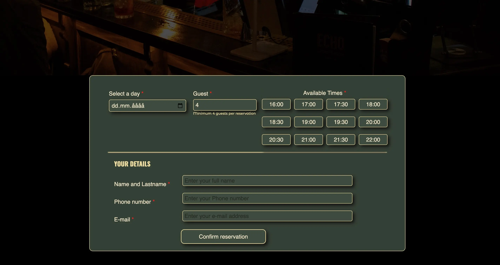
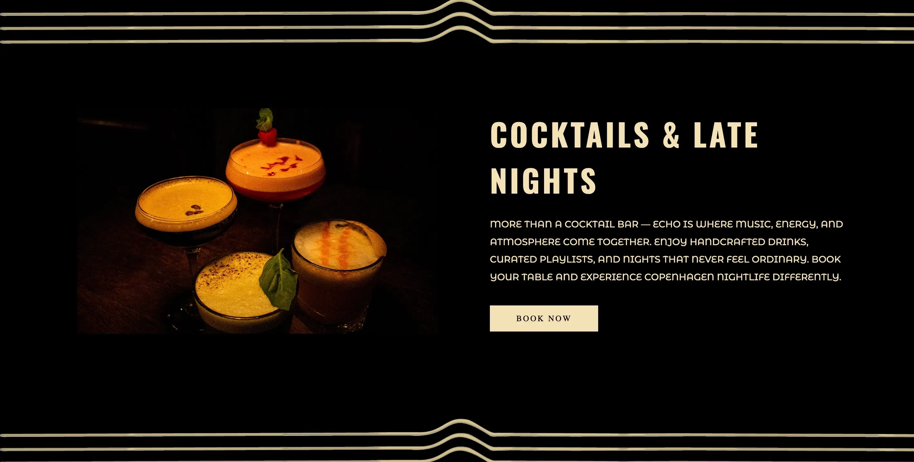
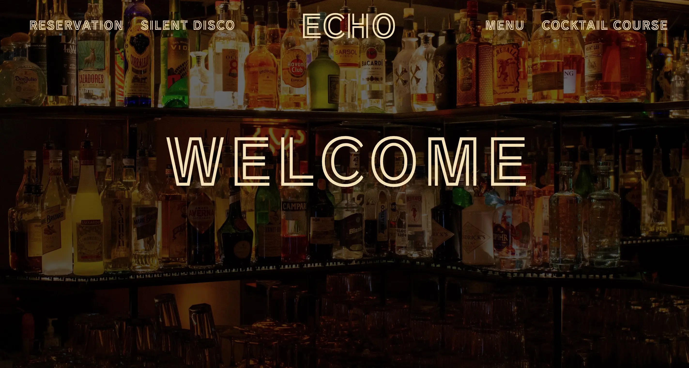

Grundlæggende indhold

Temaet
I Tema 5 arbejdede jeg med indholdsproduktion, videoredigering og redesign af en virksomheds hjemmeside. Forløbet byggede videre på de tidligere temaer og kombinerede design, brugeroplevelse, frontend-udvikling og samarbejde i et større gruppeprojekt.

Formålet
Formålet med forløbet var at lære at producere digitalt indhold og anvende det i en professionel redesignproces. Derudover arbejdede vi med brugerforståelse, testmetoder og samarbejdsprocesser, som gav indsigt i, hvordan digitale løsninger udvikles i teams.

Process
I den første del af temaet lærte jeg at arbejde med Adobe Premiere Pro og Photoshop, hvor jeg producerede og redigerede en kort film med et tydeligt budskab. Herefter indgik jeg i en gruppe på fire studerende, hvor vi redesignede ECHO Bars hjemmeside. Vi arbejdede efter Scrum-metoden med faste møder, rollefordeling og planlægning af opgaver. Undervejs udviklede vi moodboards, styletiles, wireframes og prototyper samt gennemførte blandt andet 10-sekunders tests, heuristiske tests og Lighthouse-tests for at evaluere og forbedre brugeroplevelsen.

Løsning
Resultatet blev et komplet redesign af ECHO Bars hjemmeside med fokus på en stærkere visuel identitet og en mere moderne brugeroplevelse. Vi producerede nyt indhold, udviklede et nyt layout og anvendte de design- og kodefærdigheder, vi havde opbygget gennem semesteret. Den færdige løsning skabte et mere eksklusivt og sammenhængende udtryk, som passede bedre til virksomhedens brand og målgruppe.

Erfaring og refleksion
Tema 5 lærte mig ikke kun at udvikle digitale løsninger, men også hvordan man arbejder professionelt i et team. Gennem Scrum-metoden fik jeg erfaring med Scrum meetings, planlægning af sprints, opgavefordeling og samarbejde mod fælles mål. Jeg oplevede, hvor vigtigt kommunikation, struktur og ansvar er, når flere personer arbejder på det samme projekt. Rollen som Scrum Leader gav indsigt i, hvordan man koordinerer et team, følger op på opgaver og sikrer, at projektet bevæger sig fremad. Samtidig lærte jeg at modtage og give feedback samt at tilpasse løsningen ud fra brugertests og gruppens fælles beslutninger. Forløbet gav mig derfor værdifuld erfaring med både projektstyring, teamwork og udviklingen af digitale produkter i et professionelt samarbejdsmiljø.